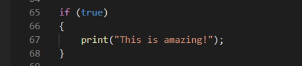
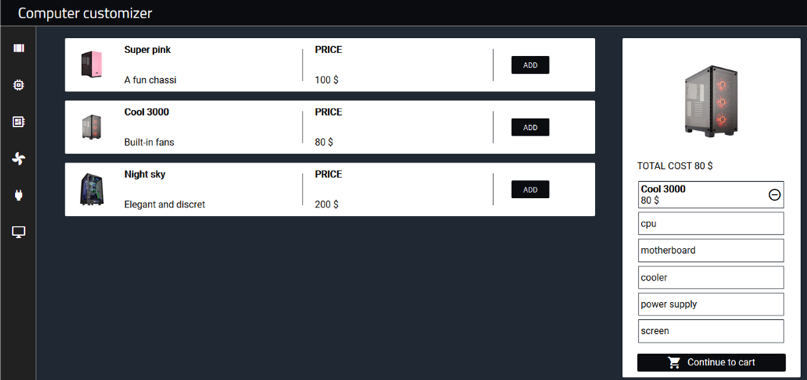

En portfolio med saker jag har gjort och lärt mig under mina tre år på systemvetarlinjen!

Människa, Teknik & Organisation
Det stora fokuset för min utbildning har alltid varit att förstå samspelet mellan människa, teknik och organisation. En av mina första kurser, med liknande namn, gav en introduktion till just detta och sedan dess har detta perspektiv genomsyrat allt i mitt tänkande.
Tetris
Jag, tillsammans med min labbpartner, utvecklade spelet Tetris i Java, inom en introduktionskurs i objektorienterad programmering. Att få utveckla ett spel tidigt i min utbildning var både utmanande, men också väldigt roligt. Detta är ett av mina första programmeringsminnen som har bidragit till det stora intresset för programmering som jag har idag!


Projekt
Tidigt i min utbildning fick jag även läsa en kurs inom projektledning, vilket bidragit till en förståelse för vilka utmaningar som finns med att driva ett IT-projekt. Bilden illustrerar en av dessa utmaningar, angående att beräkna den tid det tar att utföra ett projekt (eller snarare de ”tio sista procenten”).

Processer
Under mitt andra år på linjen började jag verkligen förstå hur organisationer kan vara uppbyggda och hur jag kunde använda modulering för att illustrera detta. Under en gästföreläsning på en av mina kurser fick jag höra frasen ”allt är processer”. Sedan dess har denna fras alltid funnits med mig och ändrat hur jag ser på verksamheter.
Programmering & optimering
I samband med att jag valde systemutveckling som inriktning fick jag läsa ännu mer programmering, denna gång inom datastukturer och algoritmer. Detta gav mig en syn på hur kod kan skrivas på olika sätt, beroende på hur den ska optimeras. Jag glömmer aldrig de timmar jag lade ner på att förstå trädstrukturer och tidskomplexitet.

Säkerhet
Jag fick även studera en kurs inom perspektiv på säkerhet och IT, vilket väckte ett intresse för informationssäkerhet. Att förstå aspekter kring hur vårt användande av teknik kan skapa risker kopplade till säkerhet var väldigt intressant att läsa om. Det var även givande att få lära mig hur informationssäkerhet berör delar som konfidentialitet, tillgänglighet samt riktighet.

Interaktionsprogrammering
Under först terminen av mitt sista år läste jag en kurs i interaktionsprogrammering, vilket gav mig kunskaperna och idén om att göra den här sidan. Att få lära mig språk som HTML och CSS öppnade en helt ny värld för mig och sedan dess har jag varit väldigt intresserad av allt som rör Front-end utveckling!
Programutvecklingsmetodik
Under min näst sista termin drev jag tillsammans med 25 andra studenter ett projekt där vi skapade en applikation till Region Östergötland. Som det går att se av bilden kallade vi oss för Medcom. Under flera veckors tid skapade vi en applikation i plattformen Angular, som skulle låta sjukvårdpersonal skicka bilder på brännskador till varandra, på ett professionellt sätt, för att på så sätt kunna få en experts uttalande angående hur allvarlig brännskadan var. Detta var en av de mest lärorika upplevelserna under min tid som systemvetare.

Kandidatarbete
Som avslutning på min utbildning skrev jag, tillsammans med min skrivpartner, ett kandidatarbete kring utmaningarna vid införande och användning av molnbaserade BI system. Vi utförde litteraturstudier och kvalitativa intervjuer för att få svar på vår frågeställning och efter hårt arbete var vi färdiga. Detta arbete knöt samman min utbildning på ett bra sätt.
Om mig
Hej, det är jag som har skapat den här sidan! Hoppas du uppskattar min sammanfattning kring vad jag har åstadkommit och lärt mig de tre senaste åren. Nedan finner du mina uppgifter för vidare kontakt.